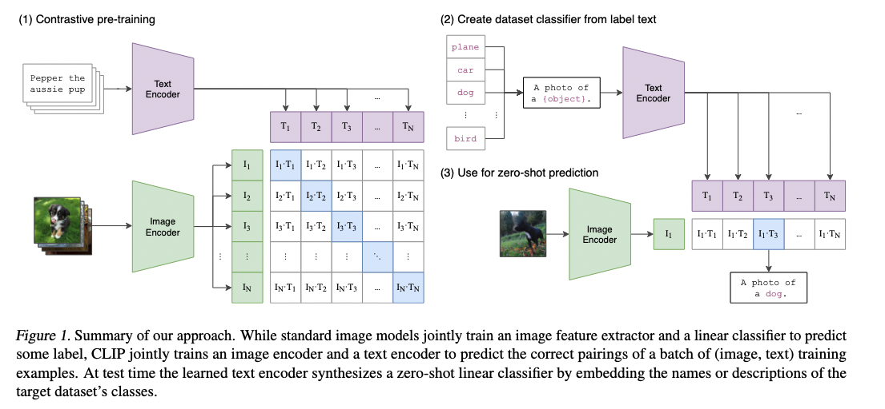
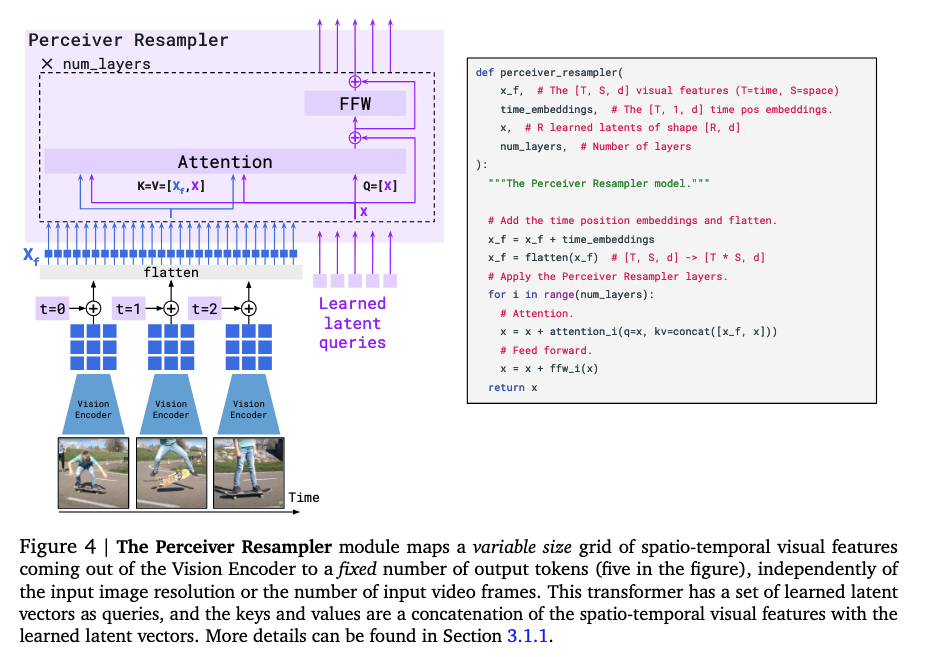
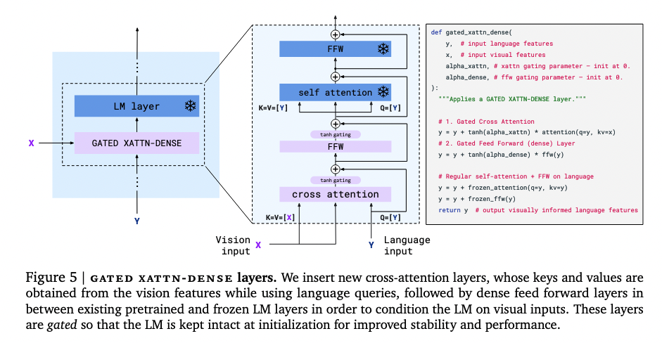
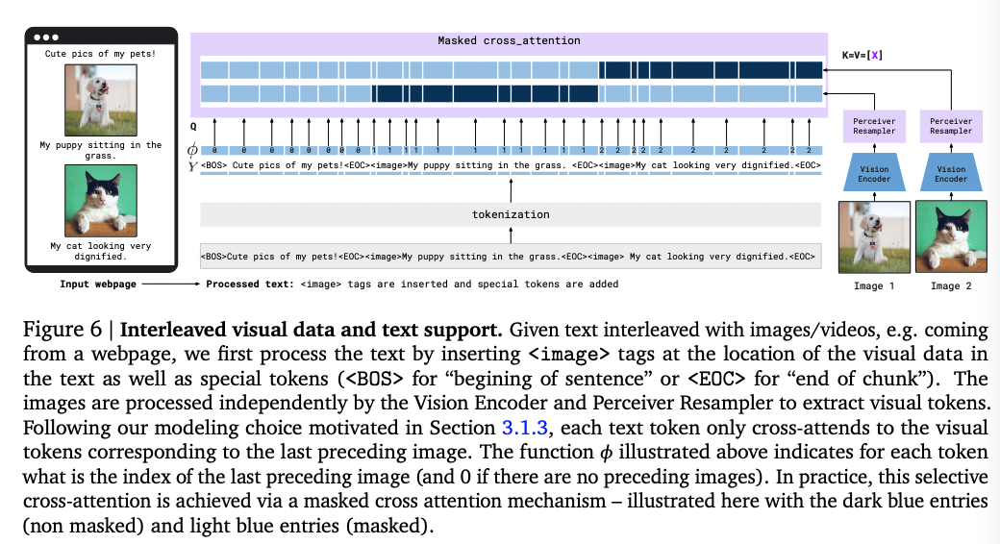
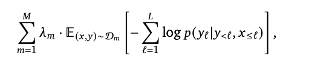
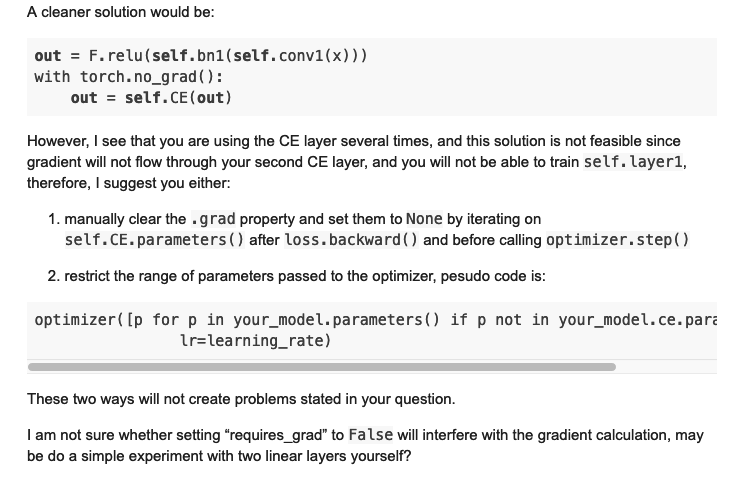

[TOC]
- Title: Flamingo: a Visual Language Model for Few-Shot Learning
- Author: Jean-Baptiste Alayrac et. al.
- Publish Year: Apr 2022
- Review Date: May 2022
Summary of paper
Flamingo architecture
Pretrained vision encoder: from pixels to features
the model’s vision encoder is a pretrained Normalizer-Free ResNet (NFNet)
they pretrain the vision encoder using a contrastive objective on their datasets of image and text pairs, using the two term contrastive loss from paper “Learning Transferable Visual Models From Natural Language Supervision”

Having contrastive objective means that the visual encoder model is already stay in the same latent space of the BERT language model.
The output of the final stage is a 2D spatial grid of feature $X_f$, later 2D feature will be flattened to 1D
trainable Perceiver Resampler: from varying-size large feature maps to few visual tokens.
the Perceiver Resampler module connects the vision encoder to the frozen language model
input: a variable number of image features
output: a fixed number of visual outputs (in practical 64)
motivation: significantly reduce the computational complexity of vision text cross attention. (particularly important when dealing with multiple long videos)
what do they need: in order to get the fixed number of output, we need to have a fixed number of query tokens
so, we learn a predefined number of latent input queries. these latent queries are fed to a transformer stack and cross attend to the flattened visual features $X_f$
The keys and values computed from the learnt latents are concatenated to the keys and values obtained from $X_f$, which we found to perform slightly better.

frozen language model
the pretrained text-only model is a decoder-only model.
but in order to let the frozen language model fit the current situation, they introduced a gated xatten-dense layer
they also apply layer normalisation to the keys, values and queries

multi-image attention
They limit the number of visual tokens that a certain text token sees.
Typically, they allow each token to attend to the tokens of the image that appeared just before it in the interleaved sequence. (this means we have temporal matching when we do cross attention between images and text)

Although the model can only directly attend to a single image at any given point, there is still a causal dependency on all previous images in the sequence via causal self-attention in the text decoder.
How to train the model’s parameters
They train the models by minimizing a weighted sum of dataset specific expected negative log likelihood of text given some visual inputs.

In practice, at each step of optimisation we go over each dataset D𝑚 in turn, sample a batch of size 𝐵𝑚 of visual language sequences from it, compute the gradient of the loss with respect to the minibatch and weight it by 𝜆𝑚. We then accumulate the gradients over all 𝑀 datasets before triggering an update step. We found this gradient accumulation strategy to be crucial for high performance compared to a round-robin approach. (how to deal with multiple training dataset)
but how to flow the gradient given that we need to freeze some modules

actually if we set requires_grad = False, everything still works ok
Potential future work
yes, we can use this model for any multi-modal tasks.